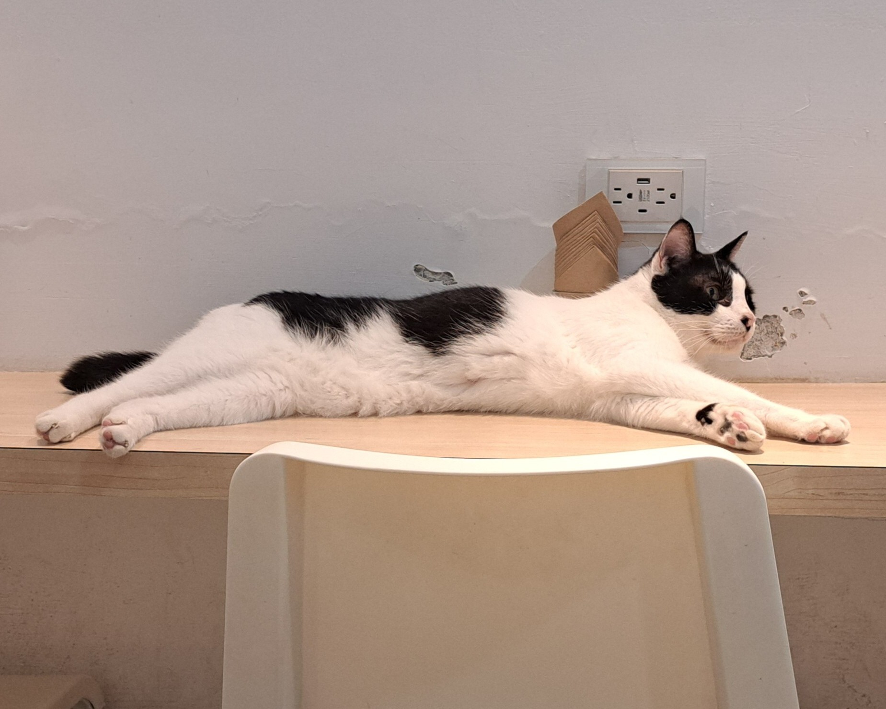
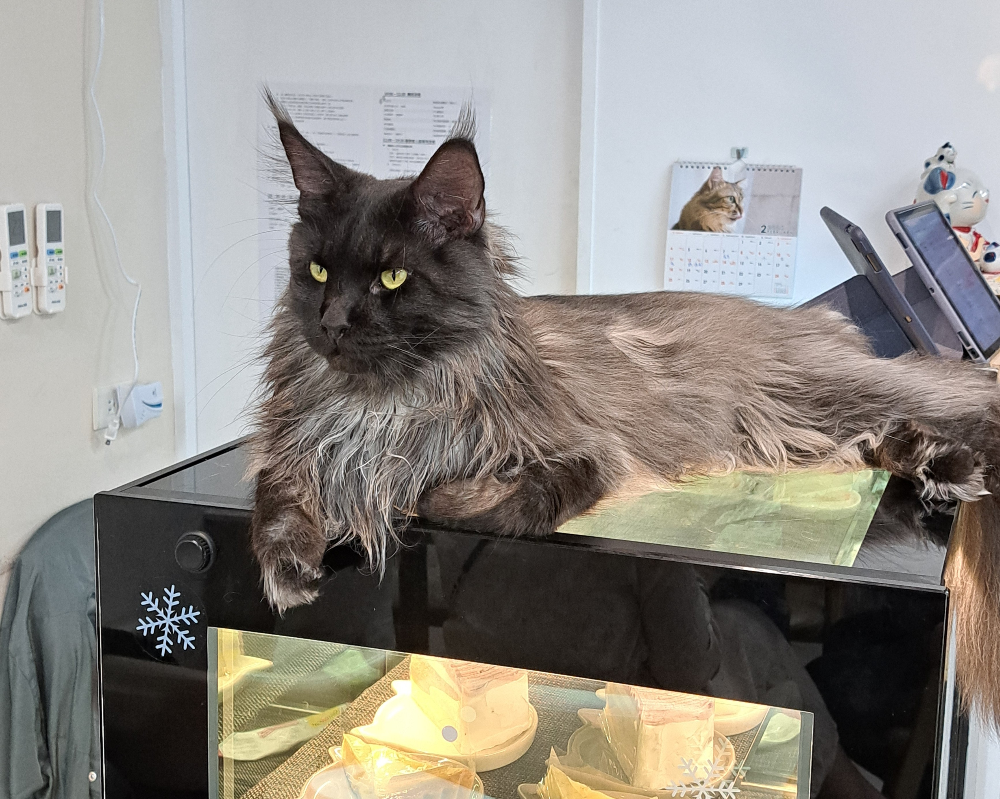
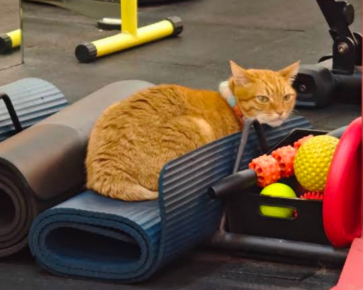

Baking Kedi Coffee Roastery 貓嘰咕自家烘焙咖啡
如果你正在尋找一個可以同時擁有頂級咖啡香與滿滿貓咪的夢幻天堂，那麼位在新北板橋的貓嘰咕絕對是此生必訪的療癒聖地！
店內擁有多隻超親人、各有性格的店貓，請小心牠們隨時會占用你的大腿與桌子。

如果你正在尋找一個可以同時擁有頂級咖啡香與滿滿貓咪的夢幻天堂，那麼位在新北板橋的貓嘰咕絕對是此生必訪的療癒聖地！
店內擁有多隻超親人、各有性格的店貓，請小心牠們隨時會占用你的大腿與桌子。

店內有多隻可愛的品種貓，包含布偶貓、緬因貓、英國短毛貓等，讓你一次享受被貓咪包圍的幸福感。除了可以近距離與貓咪互動、使用逗貓棒玩耍，也有義大利麵各式飲品可以選擇。
無論是想找個地方放鬆、享受美食，還是單純想好好吸貓，這裡都是療癒身心的好去處！

如果你不小心同時熱愛健身與貓咪，那你一定不能錯過這場特別的「喵力訓練」！
組間休息的同時還能夠補充一點貓咪能量，讓你的身心都充滿喵力，健身更有力！